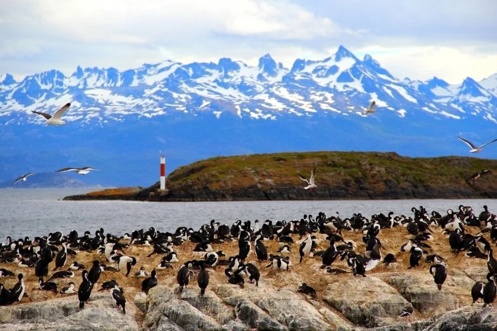
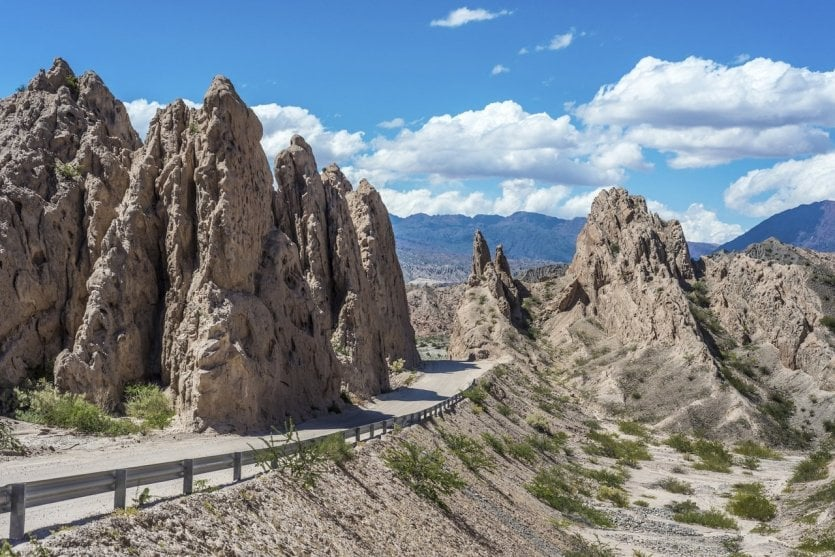

Ubicación Geográfica
La República Argentina se encuentra en el Hemisferio Sur, respecto del Ecuador. Y se encuentra en el Hemisferio Occidental, respecto del Meridiano del Greenwich. Argentina esta situada en el extremo meridional de América del Sur. Es el segundo país en extensión de Sudamérica y el octavo del mundo. Posee una superficie continental de 2.791.810 Km2 contando las Islas Malvinas, otras islas del Atlántico Sur y un sector de la Antártida. Contando al sector antártico posee una superficie total de 3.761.274 Km2. Posee una extensión de norte a sur de 3.800 Km y de este a oeste de 1.425 km.
Paises limitrofes
Limita al norte con las Repúblicas de Bolivia y del Paraguay; al sur limita con la República de Chile y el Océano Atlántico; al este limita con la República Federativa del Brasil, República Oriental del Uruguay y el Océano Atlántico; y al oeste con la República de Chile. La Antártida Argentina esta comprendida entre los meridianos 25° y 74° de Longitud Oeste, al sur del paralelo 60° Sur. En el país encontramos cuatro tipos de clima (cálido, templado, árido y frío) cuyas variaciones están determinadas por la extensión del territorio y los accidentes del relieve.
Capital Federal
La Ciudad Autónoma de Buenos Aires es la capital nacional. Limita con la provincia homónima, posee una superficie de 202 km² en donde viven 2.890.151 habitantes. Sus límites son: al este, el Río de la Plata; al sur, el Riachuelo; y se encuentra bordeada de norte a oeste por la Av. General Paz.Con una población de 40.117.096 habitantes, la República Argentina se caracteriza por ser un “crisol de razas” que define la esencia de la argentinidad.
Los primeros pobladores del actual territorio argentino fueron indígenas quienes, congregados en diversas tribus, desarrollaron sus respectivas culturas en grado diverso. Con el arribo de los conquistadores, en el siglo XVI, las costumbres y los valores propios de los españoles generaron un perdurable encuentro cultural y el inicio del mestizaje de blancos e indios. A estos se sumaron los mulatos y zambos para afirmar así la conformación de la población criolla.
El último importante caudal inmigratorio se produjo en la segunda mitad del siglo XIX y la primera del XX. De origen predominantemente europeo, constituyen otro pilar fundamental de este verdadero “crisol de razas”.En la Argentina existe una total libertad de culto. La religión católica es profesada mayoritariamente pero también se practican otros cultos como el protestantismo, el judaísmo, el islamismo, la religión ortodoxa griega, la ortodoxa rusa y otras.
Lugares turísticos en Argentina
Buenos Aires, la colorida capital
Es imposible visitar Argentina sin hacer una parada en su impresionante capital, Buenos Aires. En esta enorme y dinámica metrópolis, le encantará pasear por sus diferentes barrios, cuya arquitectura, herencia de la época colonial, recuerda a ciudades europeas como París, Nápoles o Madrid. La visita ala Plaza de Mayo es obligada, seguida de unrecorrido por los monumentos más bellos, como la Casa Rosada y el Teatro Colón. En el barrio de la Boca, encontrará coloridas fachadas, galerías de arte y boutiques de moda. Para desconectar, pasee por los jardines japoneses, los más grandes fuera de Japón. Por la noche, acérquese al barrio de San Telmo, cuna del tango, para disfrutar de espectáculos en directo. Buenos Aires es una fascinante fusión de pasión y cultura, lo que la convierte en un destino ideal para parejas un destino ideal para parejas.
las cataratas del Iguazú
Situadas en la frontera entre Argentina y Brasil, nada menos que 275 cataratas se encuentran en medio de una exuberante vegetación y figuran entre los saltos de agua más espectaculares del mundo. Para verlas, hay que acercarse al Parque Nacional de Iguazú, donde se pueden realizar maravillosos paseos alrededor de las que están consideradas las cataratas más bellas del mundo. Además de este impresionante espectáculo natural, no dude en recorrer los senderos que se adentran en el corazón de la selva tropical. Es el hogar de una flora y fauna increíbles. Si tiene suerte y abre bien los ojos, podrá incluso ver animales como pájaros, monos y osos hormigueros.
el Parque Nacional del Fuego
Cualquiera que visite Ushuaïa debería tomarse su tiempo para visitar el Parque Nacional del Fuego, sólo por la sensación de estar en el fin del mundo. Pero el parque ofrece mucho más, comola posibilidad de pasear por pintorescos lagos, ríos y lagunas patagónicos que desembocan en el famoso Canal de Beagle. Una vez pasado el Monte Susana, podrá admirar la antigua prisión que ahora sirve de estación de tren. Más tarde, llegarás al valle hacia la Bahía Ensenada, desde donde podrás admirar las islas Estorbo y Redonda. A lo lejos, se divisan los picos nevados del monte Sampaio, en Chile. Los que aún tengan fuerzas para caminar pueden seguir las orillas del río Lapataia y del lago Roca. En el Parque Nacional del Fuego, los elementos naturales son espléndidos y el paisaje de una belleza sobrecogedora.
La Ruta 40
La Ruta 40 es el equivalente a la Ruta 66 en Estados Unidos y es una de las carreteras más bellas del mundo. Paralela a la cordillera de los Andes, comienza en la frontera boliviana y atraviesa 20 parques nacionales, 18 ríos y otros tantos paisajes magníficos en su camino hacia el extremo sur del país. A lo largo de 5.000 km, es una magnífica manera de descubrir la gran variedad de paisajes argentinos. También es una ruta ideal para visitar los principales parques nacionales. Desde los valles calchaquíes hasta la región de los lagos al pie de los Andes, se encontrará en medio de paisajes a cual más espléndido. Para los más aventureros, la Ruta 40 es una cita obligada, y es necesario llevar varios tipos de ropa, ya que las temperaturas varían considerablemente de norte a sur.
Acompáñanos en este recorrido por los 10 mejores sitios que visitar en Argentina
Puedes hacer click y apreciar muchos más paisajes
Costumbres de los argentinos
- Saludar con un beso
- La sensualidad al bailar
- Juntarse con amigos a hacer un asado
- El fútbol es una religión
- Compartir el mate, es un ritual sagrado
Los argentinos son personas increíblemente afectuosas. Y aunque en la mayoría de países de Latinoamérica o de Europa es muy común saludar de beso, para algunas culturas esto puede resultar extraño. Termina siendo mucho más extraño cuando los hombres se saludan entre si también con besos. Da igual si es tu amigo, tu hermano o un completo desconocido. Los argentinos tienen esta extraña forma de saludar. Una vez llegas al país, te vas a dar cuenta de la efusiva forma en que se saludan en Argentina.
Uno de los principales atractivos de Argentina, en especial de la ciudad de Buenos Aires es el Tango. Un sensual baile y género musical que ha ganado fama a nivel internacional por su atractiva forma de ser. Este se dio durante mediados del siglo XX, cuando la multiculturalidad generada por la migración desde Europa hizo de esta una danza única. En tu viaje por Buenos Aires, Iguazú y la Patagonia, puedes disfrutar de este baile. Así como de los barrios elegantes de la capital y su excelente gastronomía.
Los amigos son muy importantes para cualquier argentino o argentina. Por eso disfrutan reunirse a compartir momentos únicos. Una de las reuniones más comunes son los asados. En estos encuentros disfrutan de la mejor carne que produce el país para compartir a la barbacoa. Esta es una de las tradiciones argentinas más extendidas y conocidas en el mundo.
El país de Maradona y Messi, los más grandes futbolistas de la historia, no puede ser otro. En Argentina el fútbol se vive de una forma diferente. La pasión de la cancha se extiende por todos los rincones del país. Buenos Aires es la ciudad con más estadios de fútbol en el mundo y sede de una de las rivalidades más importantes de este deporte, el superclásico del fútbol argentino, Boca vs River. Cuando visites el Barrio La Boca, vas a entender un poco más de lo que el deporte significa en un lugar donde la gente vive por el fútbol.
Todo argentino en cualquier parte del mundo lleva consigo su mate, su yerba y su termo. Esta bebida es indispensable en la vida de los argentinos. Sin embargo, lo que hace de esta una de las costumbres argentinas más singulares es la forma en la que se toma el mate. Aunque bien, lo podrías tomar solo, lo común es que el mate se comparta entre amigos. Por lo cual, Es muy común ver un grupo de amigos sentados compartiendo la bebida tomando con la misma bombilla y pasándose el mate de mano en mano.
Gastronomía Argentina
La gastronomía argentina es una de las más sabrosas del mundo, debido a las increíbles materias primas que emplea, sobre todo la carne. La rica cultura gastronómica argentina combina los sabores de las cocinas europeas especialmente la española y la italiana con los de la cocina criolla e indígena, y es conocida por sus carnes de res de altísima calidad. Los platos varían mucho de una región a otra, pero hay algunos que son muy populares en todo el país. Asado argentino: Es el plato típico argentino por excelencia y una de las delicias del país. Consiste en diferentes piezas de carne que, como su propio nombre indica, se asan a la brasa. Dependiendo de la región, la técnica puede variar. La típica entre los gauchos suele ser el asado a la estaca o a la cruz, que significa colgar la carne en un asador de hierro en la tierra y colocarla alrededor del fuego. En las ciudades también es común ver parrillas, aunque la mayoría de ellas sin cerrar. El tipo de carne que se suele consumir es la de vaca, cordero o el cabrito, aunque en el litoral también es frecuente encontrarse con asados de pescado. El corte también es importante, siendo los más populares la costilla o el vacío.
Empanadas argentinas: Las empanadas son otra de las especialidades gastronómicas de Argentina. De herencia española, este plato cuenta con numerosas variedades dependiendo de la región donde uno se encuentre. Una de las más populares es la de carne, que suele ir aderezada con cebolla, huevo duro y aceitunas. Son las llamadas tucumanas y a veces también pueden contener pasa de uva. El pollo, el jamón, el queso o las verduras son algunos de los ingredientes más comunes y más fáciles de encontrar en los restaurantes y puestos callejeros. Otras empanadillas populares son las cordobesas, de sabor agridulce debido a que contienen azúcar espolvoreada en su parte superior. Si la deseamos dulce, entonces no hay que dejar de probar las rellenas de dulce de leche o de membrillo.
En lo dulce podemos encontrar...
Alfajores de maicena Este dulce típico de Argentina fue introducido en el país durante la época precolombina, pues tiene origen de la antigua Al Andalus. Se trata de galletas elaboradas con mantequilla, huevo, azúcar, almidón de maíz, extracto de vainilla y coco que se juntan de dos en dos con relleno de dulce de leche. Esta crema de color marrón y sabor a caramelo es una de las más populares del país que suele acompañar muchos de sus dulces. Una vez las galletas están unidas entre sí, los alfajores se cubren de chocolate y se pueden bañar en azúcar o glaseado.
Facturas Es el nombre con el que se conocen a los dulces con los que los argentinos suelen acompañar el mate y el café. Los más conocidos son las medialunas, parecidas al cruasán francés; las tortitas negras, las bolas de fraile, los cañoncitos de dulce de leche y las palmeritas, entre otros. Las facturas se pueden encontrar en las panaderías y los argentinos suelen comprarlas por docenas, pues sale mucho más económico.

Restaurante Don Julio
Ubicado en Buenos Aires
Restaurante El Preferido de Palermo
Ubicado en Buenos Aires
Restaurante Grand Dabbang
Ubicado en Buenos Aires
Restaurante Julia Pasta
Ubicado en la Buenos Aires
Restaurante Mishiguene
Ubicado en Buenos Aires
Restaurante alo´s
Ubicado en Buenos Aires